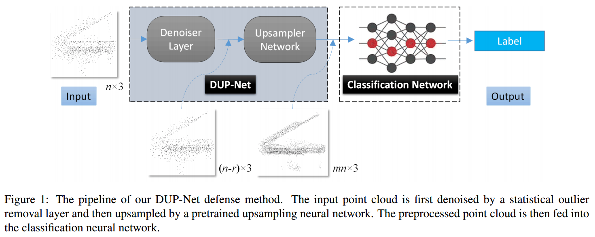
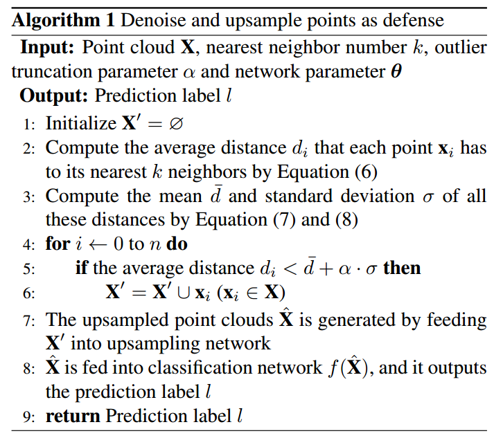

写在前面的话
将LaTeX表达式放在$$符号之间，并将所有的\转义为\\，也是写完本篇文章后发现的解决公式不能正常显示的一个途径。
本文全称是——DUP-Net：用于 3D 对抗点云防御的降噪器和上采样器网络，在第一个工作中，我们准备借鉴本文的思想来作为我们的防御模块之一。
0 Abstract
这段文字讨论了神经网络在3D点云分类中对抗性样本的脆弱性，并说明本文提出了一种名为Denoiser and UPsampler Network（DUP-Net）的防御结构。这两个模块通过删除或添加点来重建表面平滑度，其中统计异常值去除（SOR）和数据驱动上采样网络分别被视为去噪器和上采样器。与基准防御相比，DUP-Net具有三个优势。首先，采用DUP-Net作为防御手段，目标模型对白盒对抗性攻击更加鲁棒。其次，统计异常值去除提供额外的鲁棒性，因为它是一个非可微的去噪操作。第三，上采样网络可以在小型数据集上训练，并且对来自其他点云数据集生成的对抗性攻击具有良好的防御能力。本文进行了各种实验证明DUP-Net在实践中作为防御手段非常有效。最佳防御措施在200个删除点的情况下，消除了83.8%的C&W和l2损失攻击（点移位），50.0%的C&W和Hausdorff距离损失攻击（点添加）以及9.0%的显著性图损失攻击（点删除）在PointNet上。
1 Introduction
DNN对于对抗性样本具有脆弱性，这些对抗性样本是攻击者通过对原始输入添加几乎不可察觉的扰动而恶意创建的。已经有对抗性扰动的例子被用来攻击图像分类服务、语音识别系统和自动驾驶系统。
现存的防御方法可以分为三个主要类别：输入转换、对抗性训练和梯度掩蔽。除了防御之外，还有一种抵抗攻击的方法是在将对抗性样本输入网络之前检测它们，例如MagNet和基于隐写分析的检测方法。
本文的主要贡献主要包括：
（1）提出了两个新的防御模块，以减轻对抗性点云，相较于基准方法具有更好的性能。
（2）利用去噪层（统计异常值去除）的非可微性质来抵御对抗性白盒攻击。
（3）上采样网络可以在小型数据集上训练，并且对于来自其他点云数据集生成的对抗性攻击有良好的防御能力。
2 Related Work（略，非重点，后续用到补充）
3 Defenses against Adversarial Point Cloud
在3D点云防御中的目标，即构建一个对抗性样本具有鲁棒性的网络，即它能够在对抗性点云上正确分类，并在干净点云上几乎没有性能损失。形式上，给定一个分类模型 f 和一个输入 X˜，它可以是原始输入 X，也可以是对抗性输入 X′，防御方法的目标是通过数据增强来训练一个鲁棒的分类器 f’，使得 f’（X˜） = f（X），或者通过转换 T 对 X˜ 进行转换，使得 f（T（X˜）） = f（X）。（通俗地解释也就是通过特定操作，不论输入什么形式的点云，使得输出效果和输入干净的点云得到的结果没有不同）
为了实现这一目标，作者提出了一种由去噪器和上采样器组成的方法，如图所示，将一个异常值去除层和一个上采样网络添加到分类网络的前端，以实现网络的鲁棒性。这些层是在ModelNet40数据集上进行点云分类的背景下设计的，并与训练过的分类器 f 一起使用。防御函数被表示为 D: X’ → Xˆ，其中 Xˆ 表示去噪和上采样后的点云。受到用于生成更密集和均匀点集的上采样网络的启发，作者定义了损失函数：
$\mathcal{L}(\mathbf{X}, \hat{\mathbf{X}})=\mathcal{L}_{r e c}(\mathbf{X}, \hat{\mathbf{X}})+\beta \mathcal{L}_{r e p}(\mathbf{X}, \hat{\mathbf{X}})+\gamma|\boldsymbol{\theta}|_2^2$ ，其中：
（1）$\mathcal{L}_{r e c}$ 是重构损失，衡量原始输入 $\mathbf{X}$ 和经过去噪和上采样处理后的输出 $\hat{\mathbf{X}}$ 之间的差异。这一项旨在确保处理后的点云仍然能够准确地还原为原始的点云。
（2）$\mathcal{L}_{r e p}$ 是排斥损失。引入了一个乘数 $\beta$ ，用于平衡重构损失和排斥损失。排斥损失的目标是确保点云中的点相互之间分布得足够远，以提高网络对于对抗性攻击的鲁棒性。
（3）$\gamma|\boldsymbol{\theta}|_2^2$ 是权重衰减项，其中 $\gamma$ 是权重衰减的乘数， $|\boldsymbol{\theta}|_2^2$ 表示网络参数 $\boldsymbol{\theta}$ 的 L2 范数的平方。这一项的引入有助于防止过拟合，促使网络的参数保持较小的值。这个损失函数的设计旨在通过重构和排斥两方面的损失来训练网络，以提高网络的对抗性。

3.1. Statistical Outlier Removal （SOR）
由3D扫描仪生成的原始点云数据中存在离群值。为了纠正这些不规则性，提出了一种统计异常值去除方法（Statistical Outlier Removal，简称SOR），该方法通过计算最近邻距离的均值 μ 和标准差 σ 来修正这些异常值，并裁剪那些位于 μ ± α · σ 范围之外的点，其中 α 取决于分析邻域的大小。在这里，采用了 k-最近邻（kNN）方法进行异常值去除。具体而言，对于点云 X 中的每个点 xi，其 kNN 点集被定义为 $k n n\left(\mathbf{x}_i, k\right)$。然后，每个点 $\mathbf{x}_i$ 到其 kNN 中所有点的平均距离 $d_i$ 被表示为：
$$d_i=\frac{1}{k} \sum_{\mathbf{x}_j \in k n n\left(\mathbf{x}_i, k\right)}\left|\mathbf{x}_i-\mathbf{x}_j\right|_2, \quad i=1, \ldots, n$$
这个公式表示对于点云中的每个点 ，其 k-最近邻（k-nearest neighbors，简称 kNN）点集合的平均距离的计算。
$d_i$ ：表示点 $\mathbf{x}_i$ 到其 $k$ 个最近邻点的平均距离。
$\mathbf{x}_j$ ：是 $\mathbf{x}_i$ 的 $k$ 个最近邻点之一。
$k$ ：是指定的最近邻数量。
具体的计算过程是，对于每个点 $\mathbf{x}_i$ ，都计算它与其 $k$ 个最近邻点的欧氏距离，然后取这些距离的平均值，即将每个点 到$\mathbf{x}_i$ 其最近邻点的距离加总，再除以 $k$ 。这里 $n$ 表示点云中点的总数。这个公式的结果给出了每个点与其最近邻点的平均距离，是统计异常值去除方法中用于确定距离阈值的一部分。所有这些距离的均值和标准差被计算，以确定一个距离阈值：
$$\begin{gathered}\bar{d}=\frac{1}{n} \sum_i^n d_i, \quad i=1, \ldots, n,\end{gathered}$$
$$\begin{gathered} \ \sigma=\sqrt{\frac{1}{n} \sum_i^n\left(d_i-\bar{d}_i\right)^2} .\end{gathered}$$
这组公式用于计算距离的均值 $\bar{d}$ 和标准差 $\sigma$ 。这两个统计量在之后的步骤中会被用来确定距离的阈值，以便在统计异常值去除中裁剪那些位于范围之外的点。
接着，通过裁剪那些落在 μ ± α · σ 范围之外的点，得到修剪后的点集 $\mathbf{X}^{\prime}$，表示为
$$ \mathbf{X}^{\prime}=\left\{\mathbf{x}_i \mid d_i < \bar{d}+\alpha \cdot \sigma\right\} $$
根据公式，通过检查每个点的平均距离 $\bar{d}$ 是否小于阈值 $\bar{d}+\alpha \cdot \sigma$ ，可以确定哪些点应该保留在裁剪后的点云数据集中。如果小于这个阈值，那么该点被认为是正常的，将被保留；否则，被认为是离群点，将被移除。这个操作的目的是去除原始点云数据中的离群值，使得点云更加平滑和整洁。调整参数 $\alpha$ 的值可以影响裁剪的严格程度，进而影响最终的点云数据的质量。
文中指出，尽管攻击者成功欺骗了分类网络，但总会有一定比例的点不可避免地变成异常点，并被统计异常值去除方法捕获并删除。C&W攻击使一些点偏离点云表面的流形，这些异常点主要误导了分类性能。因此，通过预处理层去除的异常值越多，对抗性例子的防御能力就越好。
$p=\frac{\left|\mathbf{X}_{a d v} \cap\left(\mathbf{X}-\mathbf{X}^{\prime}\right)\right|}{|\mathbf{X}|-\left|\mathbf{X}^{\prime}\right|}$，整个公式表示了对抗性点在被去除的点集中的相对百分比，即被去除的点中有多少是对抗性点。这个百分比提 $p$ 供了一个衡量异常点去除方法对于防御对抗性攻击的效果的度量。这个公式里面各个参数的含义是：
$\mathbf{X}_{adv}$：表示对抗性点的集合。这个集合的定义因不同的对抗性失真约束而有所不同。
$\mathbf{X}$：表示原始点云数据集，包含了所有的点。
$\mathbf{X}^{\prime}$：表示被去除异常值（通过统计异常值去除方法）后的点集。
$|\mathbf{X}|$：表示点云数据集中点 $\mathbf{X}$ 的总数。
$|\mathbf{X}^{\prime}|$：表示被去除异常值后的点集中 $\mathbf{X}^{\prime}$ 点的总数。
通过观察实验结果，作者使用上述Equation计算了SOR和SRS方法的对抗性点百分比，实验结果表明，大多数情况下 SOR方法删除的对抗性点比SRS方法更多。因此SOR方法在防御对抗性点云方面比SRS方法更为有效。
3.2 Upsampling Network
作者在本节的目标是通过一种防御机制来保护一个分类模型 $f$ ，该模型面临由对手生成的扰动的点云。作者的方法受到流形假设的启发，该假设认为自然图像或点云位于低维流形上。已知扰动的点云偏离了自然点云的 低维流形，而这个流形可以由深度网络来近似。为了提高点云的视觉质量，作者提出使用点云上采样将流形外的对抗性样本重新映射到自然流形上以重构表面。通过这种方式，对抗性扰动的鲁棒性是通过增强点云的视觉质量来实现的。这种方法相对于其他防御机制具有显著优势，因为它不会截断关键信息以实现鲁棒性。
具体而言，由于这些扰动通常会删除点云的关键点，作者使用了一个点云上采样网络，该网络输出一个更密集的点云，该点云沿着目标对象的表面分布均匀。在这项工作中考虑的网络是Point Cloud Upsampling Network (PUNet)，该网络从3D模型的基于点的块中学习几何语义，其架构如图所示。
接下来是用于衡量点云重建质量的损失函数，其中作者使用了重构损失，其目标是最小化点云的 Chamfer距离。重构损失定义如下：
$|\hat{\mathbf{X}}|_0$ 表示点云 $\hat{\mathbf{X}}$ 的点的数量。
$\sum_{\mathbf{x}^{\prime} \in \hat{\mathbf{X}}}$ 表示对点云 $\hat{\mathbf{X}}$ 中的每个点 $\mathbf{x}^{\prime}$ 执行求和。
$\min _{\mathbf{x} \in \mathbf{X}}\left|\mathbf{x}-\mathbf{x}^{\prime}\right|_2^2$ 表示对于给定的上采样点 $\mathbf{x}^{\prime}$，找到原始点云 $ \mathbf{X}$ 中与之距离最近的点 $\mathbf{x}$，并计算它们之间的 $L_2$ 范数的平方。
$\frac{1}{|\hat{\mathbf{X}}|_0}$表示将所有这些最近点之间的平方 $L_2$ 范数求和并取平均，以得到平均每个上采样点的重构损失。
因此，这个公式的目标是衡量原始点云和通过上采样得到的点云之间的差异，其中重构损失的值越小表示上采样后的点云越接近原始点云。这种损失通常用于评估上采样模型的性能，以确保生成的点云在结构上保持与原始点云的相似性。
综上所述，总的算法流程如图所示：

以下是对算法的逐步解释：
- 输入： 算法接收一个点云 $X$，最近邻数量 $k$，异常值截断参数 $\alpha$，以及网络参数 $\theta$。
- 初始化： 初始时，生成一个空的点云 $X’$ 用于存储通过去噪操作保留的点。
- 计算平均距离： 对于每个点 $x_i$，计算它与最近的 $k$ 个邻居的平均距离 $d_i$。
- 计算平均距离的均值和标准差： 计算所有点的平均距离的均值 $\bar{d}$ 和标准差 $\sigma$。
- 去噪操作： 遍历点云 $X$ 中的每个点 $x_i$，如果 $d_i < \bar{d} + \alpha \cdot \sigma$，将该点 $x_i$ 添加到 $X’$ 中，表示该点未被认为是异常点。
- 上采样操作： 将 $X’$ 输入到上采样网络中，生成上采样后的点云 $\bar{X}$。
- 分类操作： 将上采样后的点云 $ f(\bar{X}) $ 中，获取对应的预测标签 $l$。
- 输出： 返回预测标签 $l$。
这个算法的核心思想是通过去噪操作保留对点云分类有用的信息，然后通过上采样网络增加点的数量，最终通过分类网络进行预测。这样的防御方法旨在提高对抗性攻击的鲁棒性，使模型更难受到攻击。
4. Experiments
4.1 Experimental Setup
数据集：
- 使用了 ModelNet40 数据集，其中包含来自40个不同物体类别的12,311个CAD模型。这些模型中的9,843个用于训练，剩余的2,468个用于测试。
- 在生成对抗性点云之前，从每个对象的表面均匀采样了1,024个点，并将它们重新缩放到一个单位立方体内。这一步骤的目的是为了规范化数据的尺寸。
- 使用了 Visionair 数据集来训练 DUP-Net，该数据集包含来自 Visionair 仓库的60个不同模型，涵盖了光滑的非刚性物体和陡峭的刚性物体。
网络和实现细节：
- 使用了 PointNet 和 PointNet++ 作为目标分类网络，并使用默认设置对模型进行训练。
- 对于提出的 DUP-Net 的训练，对于 ModelNet40，上采样点的数量为2048，上采样率为2；对于 Visionair 数据集，上采样点的数量为4096，上采样率为4。
- 每个输入样本包含 $n = 1024$ 个点，用于进行训练。
- 平衡权重 $\beta$ 和 $\gamma$ 分别被设置为 0.01 和 $10^{-5}$。
- 实现基于 TensorFlow，使用 Adam 优化算法进行训练，训练120个epochs，每个小批次包含28个样本，学习率为0.001。
攻击评估：
- 攻击者首先使用非定向/定向模型生成对抗性样本，然后在目标和防御模型上评估这些生成的对抗性样本的分类准确性。
- 非定向/定向模型的低准确性表明攻击是成功的，而防御模型的高准确性表明防御是有效的。
4.2. Ablation Study
SOR & PU-Net as Defense
SOR专门针对的是生成对抗样本的攻击，通过删除对应点实现防御，表格如图所示。
PU-Net专门针对的是基于显著性点删除的攻击，其中攻击者有意删除或修改输入点云中的一些关键点，以干扰目标分类模型的性能。结果表明，上采样网络有助于对抗性示例填充对于分类至关重要的缺失点，尤其是在删除数量为200时，防御几乎提高了9%。此外，上采样网络可以在小型数据集上进行训练，并且对来自其他点云数据集生成的对抗性攻击具有良好的泛化能力。
4.3. Evaluation Results of DUP-Net
表格1中的最后一列显示了提出的DUP-Net针对PointNet上不同攻击（基于C&W的点移动/点添加/簇添加/物体添加 [34] 和点删除）的整体防御准确性。对于干净的点云数据，DUP-Net略微降低了2%的检测准确性；对于C&W攻击，DUP-Net表现优于基线SRS、提出的SOR和提出的PU-Net。与PU-Net相比，DUP-Net的性能更好，这表明异常值移除操作有效地提升了防御性能。**对于点删除攻击，DUP-Net的防御性能略逊于独立使用PU-Net，但仍优于基线，这意味着攻击者对局部形状进行的大幅修改导致了一些局部形状在很大程度上消失，而SOR防御进一步破坏了关键的骨架信息。（但是我们的论文工作只存在C&W类型的攻击，所以不会出现这样的负反馈现象）**对于C&W簇和C&W物体攻击，本文的DUP-Net防御将准确性提高到87.6%和68.4%；在SRS防御的情况下，准确性分别为92.0%和92.4%。这些结果进一步证明了我们强大的防御能力。
总体而言，DUP-Net作为预处理网络有助于确保基于神经网络的分类的稳健性，并抵御来自对抗性点云的攻击。此外，DUP-Net是不可微分的，这使得攻击者难以实施二次对抗性攻击。
4.4. Visualization

如图所示是可视化结果，前四列为一组后三列为一组，后三列是抹除点的攻击，和我们工作无关，暂时不用考虑。
5. Conclusion
在这篇论文中，提出了一个由统计离群值去除（SOR）层和点云上采样网络（PU-Net）组成的去噪和上采样网络（DUP-Net），用于抵御3D点云对抗样本，提出使用点云恢复技术来净化受扰动的点云。作为初始步骤，应用SOR来抑制基于离群值的噪音模式，并制定一个难以绕过的不可微分层。方法的核心组件是上采样操作，它在增强点分辨率的同时消除了类似于图像超分辨率操作的对抗性模式。实验证明，仅使用点云上采样网络就足以恢复分类器对正确类别的判别能力；此外，统计离群值去除步骤提供了额外的鲁棒性，因为它是一个不可微分的去噪操作。
名词解释及问题
重建表面平滑度
重建表面平滑度指的是在3D点云数据中通过一些操作或处理，使得表面在可视化时看起来更加平滑和连续。在3D点云中，表面通常是由大量的离散点表示的，而这些点之间可能存在缺失或不规则，导致在可视化时表面呈现出不光滑的外观。
在文中提到的上下文中，采用Denoiser and UPsampler Network（DUP-Net）结构，通过两个模块来实现表面平滑度的重建。这两个模块分别是去噪器（Denoiser）和上采样器（Upsampler）。去噪器使用统计异常值去除（Statistical Outlier Removal，SOR），通过删除或调整离群点来去除数据中的噪声，从而提高表面的平滑性。而上采样器则通过在点云中添加新的点，使得表面更加密集，进而达到平滑的效果。
非可微的去噪操作
非可微的去噪操作是指在某一点处不具备导数或梯度的去噪过程。在数学中，可微性表示函数在某一点处具有导数，也就是说，函数在该点处的变化率是定义良好的。然而，一些去噪方法可能包含一些非可微的运算，使得在这些点处无法明确定义导数。
在神经网络和深度学习中，通常使用梯度下降等优化算法来调整模型参数以最小化损失函数。这就要求损失函数是可微的，以便计算梯度并进行参数更新。如果损失函数中包含非可微的操作，会导致计算梯度时出现问题。
在上文中提到的文本中，提到统计异常值去除（Statistical Outlier Removal，SOR）作为去噪器，被标记为一种非可微的去噪操作。这可能是因为异常值去除可能采用一些阈值或非线性操作，导致在某些点上无法明确计算梯度。这种非可微的性质可能对神经网络的训练产生影响，因为梯度下降等优化算法通常要求可微性。因此，在设计防御机制时，选择非可微的去噪操作可能是出于增加对抗性攻击的难度或使得对抗样本更难生成的考虑。
为什么统计异常值去除是一个非可微的去噪操作就可以提供额外的鲁棒性？
可以通过以下几个方面来理解：
- 增加复杂性： 非可微的操作引入了在点云中进行去噪时的非线性特性，这使得对抗性攻击更难以生成。对抗性攻击通常是基于模型的梯度信息，而非可微的操作使得在这些点上无法准确计算梯度，从而增加了攻击的难度。
- 限制攻击者的信息： 非可微的去噪操作可能使得攻击者在生成对抗性样本时更难以了解模型的内部机制。攻击者通常依赖模型的梯度信息来生成对抗性扰动，而非可微性可能会限制攻击者对模型行为的了解。
- 提高鲁棒性： 由于SOR是一种去除离群值的操作，非可微性可能有助于使得去噪更加稳健。在非可微的情况下，对于输入数据中微小的变化，输出可能不会出现剧烈的变化，这有助于模型对于轻微扰动的鲁棒性。
非线性特性是什么？为什么去噪是非线性操作？为什么非线性操作会导致在某些点上无法明确计算梯度？
非线性特性指的是在数学和函数的上下文中，函数不遵循线性关系的性质。在线性代数中，一个函数如果同时满足加法和数乘的性质，就被称为线性函数。而非线性函数则不满足这些性质，可能包含乘法、除法、指数、对数等非线性运算。
去噪操作通常是非线性的，因为噪声的性质可能是复杂的、非线性的，并且噪声的影响可能不仅仅是简单的加法。例如，去噪可能涉及到对像素值进行非线性的阈值处理、滤波、或其他形式的变换。这些非线性的操作可以更有效地捕捉和处理图像中的复杂噪声结构。
在深度学习中，模型的训练通常涉及到梯度下降等优化算法，这些算法依赖于目标函数的梯度。梯度是函数在某一点的变化率，对线性函数而言，梯度是常数，对非线性函数而言，梯度可能在不同点处不同。
为什么非线性操作会导致在某些点上无法明确计算梯度呢？
- 不可导性： 一些非线性操作在某些点上可能是不可导的。这意味着在这些点上，函数的导数（梯度）不存在，无法明确计算。例如，在阈值函数的跳跃点上，导数未定义。
- 不光滑性： 一些非线性操作可能导致函数在某些点上不光滑。梯度下降算法通常期望函数是光滑的，以便在梯度的指导下有效地更新参数。非线性操作可能破坏这种光滑性，使得在优化过程中更难处理。
在文中提到的统计异常值去除（SOR）可能包含一些非线性的阈值判定或者排除机制，这可能导致在一些点上无法明确计算梯度，从而增加了模型对抗性攻击的难度。
k-最近邻（kNN）
KNN（K-Nearest Neighbors，k近邻）是一种简单而直观的机器学习算法，通常用于分类和回归问题。该算法基于一个简单的思想——如果一个样本在特征空间中的k个最近邻居中的大多数属于某个类别，那么该样本也属于这个类别。以下是KNN算法的基本原理和步骤。
KNN的基本原理：
- 距离度量： KNN通过计算样本点间的距离来度量它们的相似性。常用的距离度量包括欧氏距离、曼哈顿距离、闵可夫斯基距离等。
- 近邻选择： 对于一个给定的样本点，找到与其距离最近的k个训练集中的点，这些点称为其k个最近邻。
- 多数表决： 统计k个最近邻中每个类别的出现频率，将出现频率最高的类别作为该样本的预测类别。
KNN的步骤：
- 选择K值： 选择一个合适的K值，它决定了在预测时考虑多少个最近邻的信息。
- 计算距离： 对于测试样本，计算它与训练集中所有样本点的距离。
- 找到最近邻： 选择距离最近的K个训练样本。
- 投票决策： 根据最近邻的类别进行投票，将得票最多的类别作为测试样本的预测类别。
KNN的特点：
- 简单易理解： KNN是一种非参数学习算法，没有复杂的模型假设，容易理解和实现。
- 适用于小数据集： 在数据集较小的情况下，KNN的效果通常比较好。
- 对异常值敏感： KNN对于异常值较为敏感，因为它的预测结果直接受到最近邻的影响。
- 计算复杂度高： 随着训练集规模增大，KNN的计算复杂度也会增加，因为需要计算样本之间的距离。
KNN在实际应用中常用于图像识别、手写数字识别、推荐系统等领域。选择合适的K值和距离度量方法是KNN应用中需要注意的关键因素。
低维流形
低维流形是一个数学概念，用来描述在高维空间中的某个局部区域，数据的分布相对于整个高维空间而言具有较低的维度。直观上，我们可以将低维流形理解为数据在高维空间中弯曲、折叠或嵌入的结构，使得数据的自由度相对较少。
举例来说，考虑一个三维空间的曲面，比如球面。尽管球面嵌套在三维空间中，但它实际上是一个二维的流形，因为在每一点上，表面上只需要两个自由度（例如，经度和纬度）来描述一个点的位置。这就是流形的低维性质：尽管嵌套在高维空间中，但在局部区域上，它的结构相对较简单。
在机器学习和数据分析中，低维流形的概念被广泛用于理解高维数据的内在结构。许多真实世界的数据分布，特别是自然图像、语音信号等，通常在高维空间中有着较低维度的结构。这种低维结构可以使得对数据进行建模和分析更为有效。
一些相关的观点和概念：
- 局部性质： 低维流形通常是局部性质的，即在空间中的小邻域内近似为低维。这使得在局部进行线性建模和分析成为可能。
- 流形假设： 机器学习中的流形假设指的是，真实数据分布通常集中在一个相对较小的低维流形上。这个假设是许多降维和特征学习方法的基础。
- 降维技术： 为了更好地理解和处理高维数据，降维技术被设计用来将数据映射到一个较低维的空间，同时保留尽可能多的信息。PCA（主成分分析）和t-SNE（t-distributed stochastic neighbor embedding）等算法就是基于低维流形概念的降维技术。
总体而言，低维流形的概念提供了一种直观的方式来理解高维数据的结构，从而在机器学习和数据分析中发挥了重要作用。
Chamfer距离
Chamfer距离是一种用于衡量两个点云之间相似性的距离度量。具体来说，给定两个点云，Chamfer距离通过计算每个点到另一个点云上最近的点之间的距离，并将这些距离进行求和来度量它们之间的相似性。
Chamfer距离的目标是使两个点云之间的对应点距离尽可能小，以表达它们之间的相似性。这个距离度量在点云生成、点云匹配等任务中经常被用作损失函数，以引导模型生成具有更好结构的点云或找到两个点云之间的最佳对应。